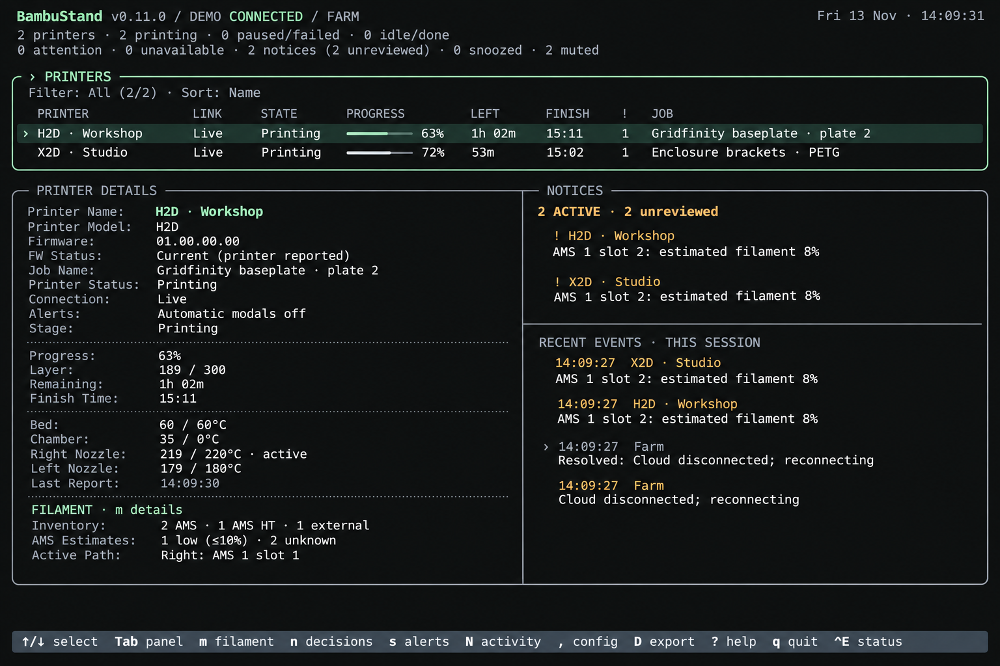
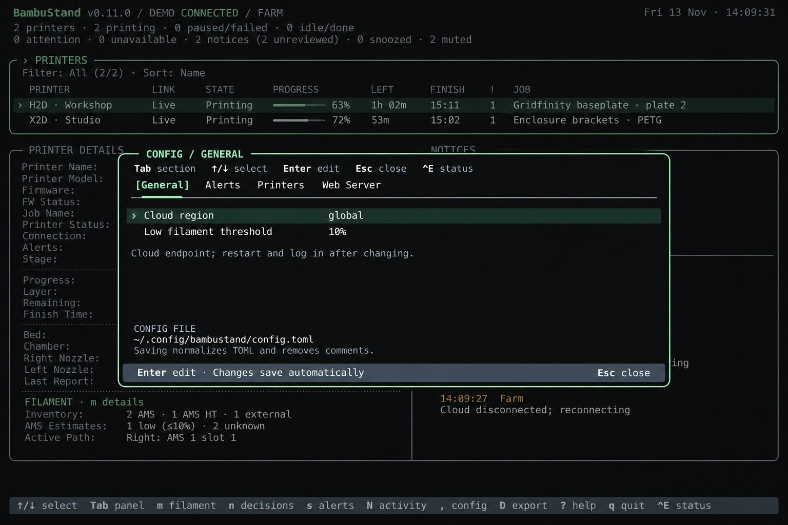
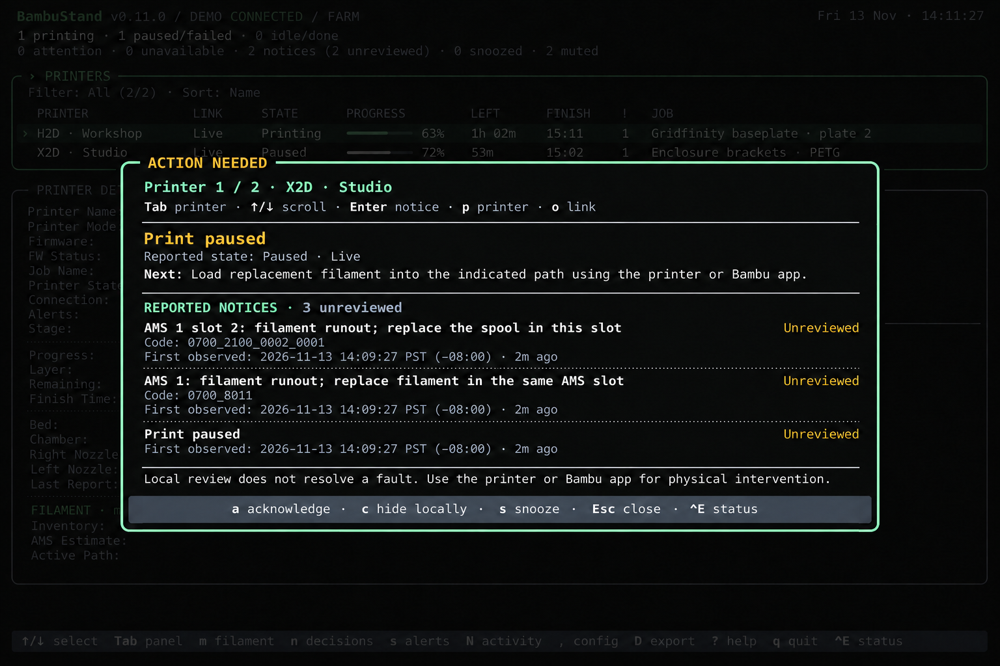
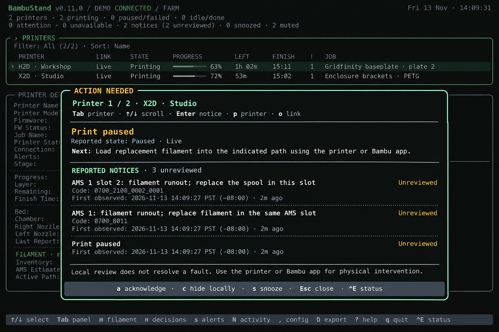
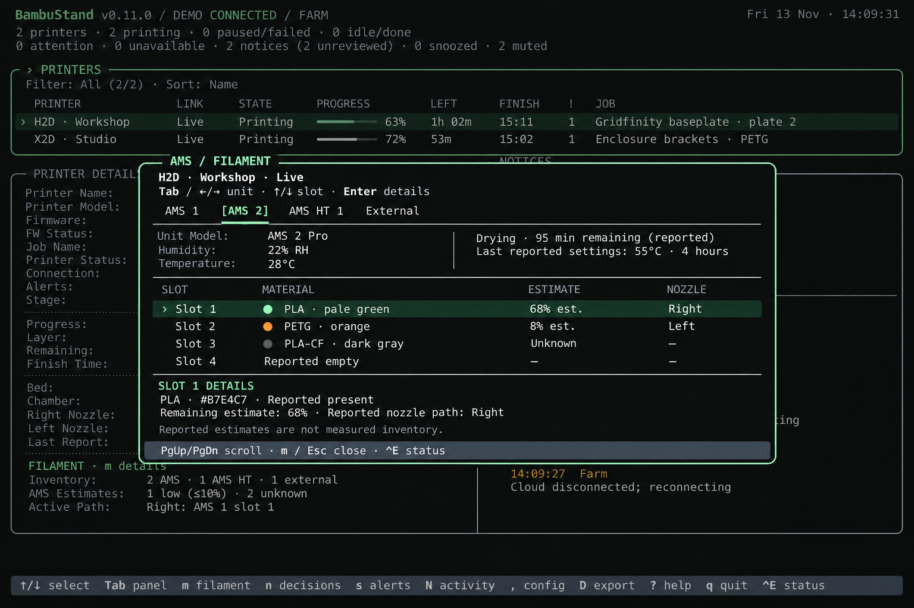
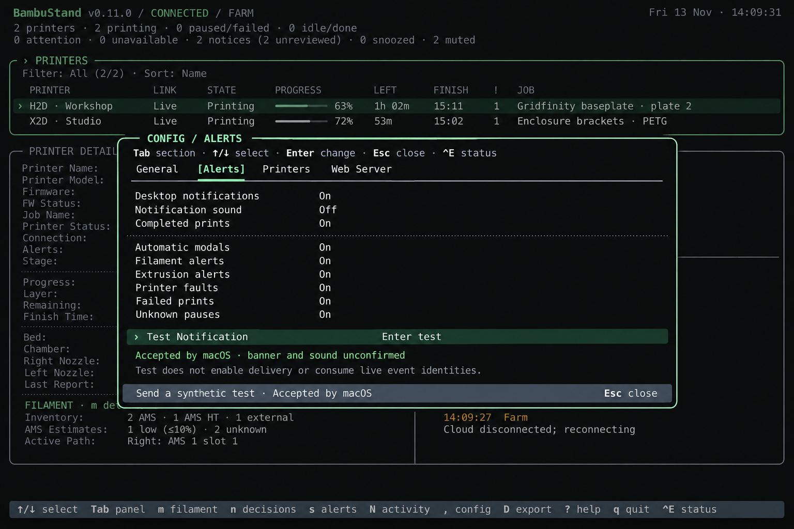
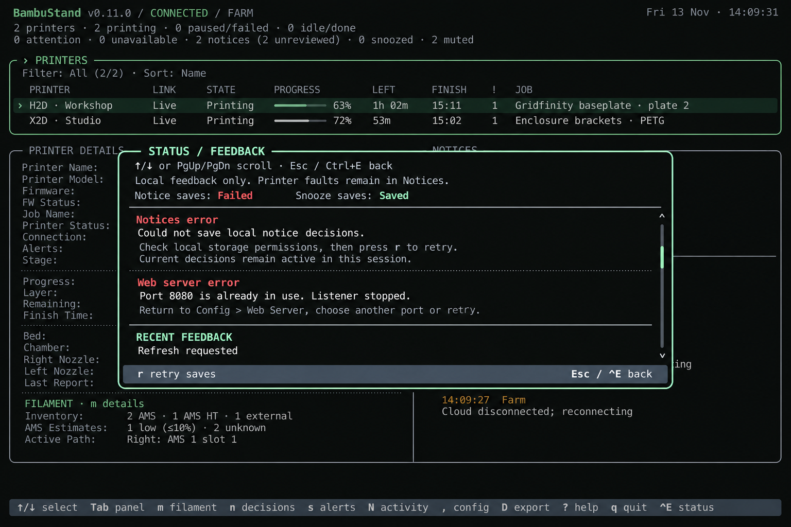
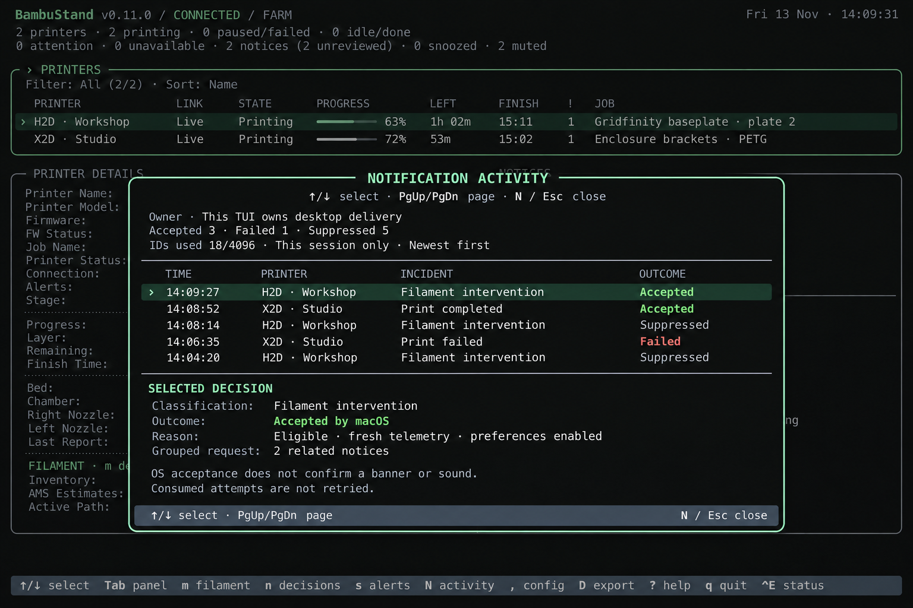

DESIGN STUDY 01 · DIRECTION REVIEWED · 13 NOV 2026BambuStand / TUI refresh
A restrained evolution: thin rounded borders, shared joints, clearer grouping, and modal inspection over the farm. All seven screen directions received “Keep direction” in the exported review. The milestone plan below incorporates centering, the approved stronger dashboard dimming, and minimum-size policy; implementation details remain proposed.
Seven generated image concepts, plus exact text-grid studies. These are proposals, not application captures, working dialogs, terminal-fit evidence, or hardware validation. Experimental cell-edge rendering is a separate feasibility decision.
Feedback stays in this browser when local storage is available.
Recorded review
Feedback exported 14 November 2026 (UTC): all seven screen directions marked Keep direction. No individual screen changes requested. Original review feedback is retained alongside the concepts.
Modal placement: keep panels centered horizontally and vertically when opened. Proposed implementation policy: recenter on terminal resize while preserving the active owner, input, selection, confirmation, and scroll. Use the nearest cell-aligned center when an exact center falls between cells.
Minimum size: compact layouts are secondary to the normal working layout. The existing supported minimum is 60 columns × 18 rows, with a warning below it. Retain that baseline for this draft; changing the threshold requires an explicit implementation decision and corresponding guidance/tests. Treat 120 × 32 as the primary design-review size; the large images are visual references, not measured 120 × 32 renders.
Shared direction for review
- Small rounded corners, thin solid structural lines, shared dividers, and sparing dotted separators.
- Accent outlines show focus. Selection retains its background and explicit marker; state remains readable in text.
- One active modal owns input. Telemetry continues; close restores position. The dimmed farm footer is inactive.
- Wide screens use modals centered on both axes; recenter after resizing. Compact screens use the viewport, with fixed headings and controls around scrolling content.
- Preserve current keys, immediate Config saves, read-only scope, occurrence identities, and unknown/last-known qualifiers.
01Dashboard
Shared panel boundaries, rounded corners, and a quiet hierarchy.

Are the panel outlines helpful? Are the dotted detail separators too busy?
02Settings / General
Bounded Config over the farm, with tabs and its own active footer.

Is the modal size comfortable? Should sparse sections use a shorter panel?
Action needed · stronger dashboard dimming
Proposed variant for review: dim the dashboard foreground toward roughly 35–40% of its normal brightness, including the header, panel lines, selection, and inactive footer. Keep the modal opaque and at full contrast. This is a visual target, not a measured luminance value.
Open dimmed variant ↗
Generated positioning is approximate and still slightly below the exact viewport center. Implementation must compute centering on both axes. The original concept below is retained for comparison; this stronger-dimming direction was approved by the user. Exact theme-specific values remain an implementation decision.
03Action needed
Reported outcome and next step lead; independent notices retain their metadata.

Is the next step clear? Is the distinction between local review and physical intervention visible enough?
04AMS / Filament
Unit navigation, reported drying, slot table, and selected-slot details.

Does the information grouping work? Is the table preferable to a more graphical spool view?
05Settings / Alerts
Existing preferences, immediate saves, and explicit notification-test acceptance.

Are the groups and On/Off values easy to scan? Is test feedback sufficiently clear?
06Status / Feedback
Independent save states, complete failure guidance, and a fixed return/retry footer.

Are errors easy to distinguish from printer faults? Can you tell which failures retry saves affects?
07Notification activity
Ownership and capacity above a stable decision list with selected-entry details.

Are ownership, outcome, reason, and grouped membership easy to understand?
Compact / no-color layout studies
Each block contains exactly 60 characters per row and 18 rows. These are static monochrome text-layout proposals with conventional separators. They explore content allocation without relying on color; they do not validate application rendering, font widths, resize behavior, or full keyboard routing.
Review feedback treats these extreme sizes as secondary. The existing 60 × 18 minimum is retained provisionally; this study does not adopt a higher minimum. Compact dialogs replace the background visually. Bodies scroll; headings and close controls remain fixed. Dashboard details/notices remain stacked. The compact footer shows one context, not the complete keyboard reference.
Dashboard · 60 columns × 18 rows
BambuStand · Connected
2 printers · 2 printing · 0 unavailable
2 notices · 2 unreviewed
› PRINTERS
Filter: All · Sort: Name
PRINTER STATE PROGRESS
› H2D · Workshop Printing 63%
X2D · Studio Printing 72%
PRINTER DETAILS
H2D · Workshop · Live
Job: Gridfinity baseplate · plate 2
63% · Layer 189/300 · Remaining: 1h 02m
NOTICES
2 active · 2 unreviewed
! H2D: AMS 1 slot 2 · estimated filament 8%
! X2D: AMS 1 slot 2 · estimated filament 8%
↑/↓ select · Tab panel · ? help · q quit · ^E status Settings · 60 columns × 18 rows
CONFIG / GENERAL
Tab section · ↑/↓ select · Enter edit · Esc close
[General] · Alerts · Printers · Web Server
────────────────────────────────────────────────────────────
› Cloud region global
Low filament threshold 10%
Cloud endpoint; restart and log in after changing.
CONFIG FILE
~/.config/bambustand/config.toml
Saving normalizes TOML and removes comments.
Enter edit · Changes save automatically · Esc close Activity · 60 columns × 18 rows
NOTIFICATION ACTIVITY
↑/↓ select · PgUp/PgDn page · N/Esc close
Owner · This TUI owns desktop delivery
IDs used 18/4096 · Session history
Accepted 3 · Failed 1 · Suppressed 5
────────────────────────────────────────────────────────────
› 14:09 H2D · Workshop Filament Accepted
14:08 X2D · Studio Finished Accepted
14:08 H2D · Workshop Filament Suppressed
14:06 X2D · Studio Failed Failed
────────────────────────────────────────────────────────────
SELECTED DECISION · 2 related notices
Filament intervention · Accepted by macOS
Fresh telemetry · Preferences enabled
Acceptance does not confirm a banner or sound.
Consumed attempts are not retried.
↑/↓ select · PgUp/PgDn page · N/Esc close Below 60 × 18: preserve the existing resize guard, block hidden actions, continue telemetry, and restore the suspended owner after resizing.
Milestone · TUI UI/UX refresh
Proposed outcome: a coherent, compact farm monitor with rounded panel structure and consistent modal inspection, preserving telemetry meaning and keyboard workflows. All seven visual directions and the stronger-dimming variant are accepted for planning. Track implementation in milestone 19. Start with #190 shared frames and centered, dimmed modals, then #191 dashboard, #192 Config, #193 Action needed / Filament, and #194 status/activity and remaining dialogs. #195 separately assesses experimental cell-edge support; adoption is optional.
- Shared visual primitives. Rounded frames, shared dividers/joints, title placement, focus, tabs, selection, scroll indicators, and semantic palette integration. Develop the conventional-terminal baseline first.
- Dashboard refinement. Preserve the list/detail/notice hierarchy and responsive stacking; improve detail grouping and shared boundaries.
- Modal foundation and Config. Responsive dimensions; horizontal and vertical centering when opened and after resize; opaque compositing; background dimming; owner-specific footer; return behavior; editing/confirmations; and live updates. Preserve input, selection, confirmation, and scroll on recentering. Clamp to the available viewport and round to the nearest character cell. Include General, Alerts, Printers overrides, and Web Server.
- Inspection screens. Apply the frame to Action needed, Filament, Status / Feedback, and Notification activity. Adapt notice inspection, decisions, snooze, Help, About, Server Status, export preview, and confirmations for visual consistency. Shutdown keeps its dedicated behavior.
- Verification and documentation. Extend interaction tests; prioritize the 120 × 32 working layout. Check modal centering on opening and resizing, the existing 60 × 18 minimum and below-minimum warning, and the 104/105-column stacking boundary. Compact layouts prioritize essential controls and useful scrolling over matching wide-screen presentation. Cover color profiles/themes, long strings, no/unknown/stale/offline data, selection, scrolling, updates, save failures, and suspended dialogs. Update help, affected guides, and actual application captures together.
- Optional cell-border experiment. Investigate capability negotiation and Bubble Tea renderer integration separately. Exercise supported terminals, conventional fallback, resize/erase/scroll, and multiplexers. Adoption depends on feasibility; required behavior remains available without it.
Decisions before creating issues
Settled by review: keep all seven screen directions; center modals on both axes; treat extreme compact layouts as secondary and give a clear below-minimum warning. Still to settle: modal width/height policy, whether evidence warrants raising the existing 60 × 18 minimum, theme-specific dimming implementation (the stronger-dimming direction is approved), separator density, detail priority, compact footer priorities, and whether experimental cell borders belong in the first milestone or later.
Completion criteria
Approved layouts implemented without changing monitoring/notification policy; consistent focus and modal ownership; panels remain centered within one cell on both axes on opening and resize; required controls readable at supported sizes; the below-minimum warning preserves existing blocked-action and state-restoration behavior; conventional fallback usable; required Go/terminal and documentation checks pass; affected application screenshots updated. Review images stay separate from current screenshots.
Scope and known limits
Images use built-in image_gen with the current farm/Config captures and the two concepts reviewed in this conversation. Prompt direction and screen intent are recorded in concepts.json: restrained rounded cell-edge lines, shared joints, existing controls, semantic colors, bounded modals, and read-only semantics.
Generated images are visual references, not pixel specifications. Spacing, stroke weight, text size, and copy need deterministic implementation. Some backdrops retain an illustrative farm snapshot even when the foreground scenario changes; implementation must use one coherent live snapshot. Action-needed age/clock examples are illustrative. Notification screens depict synthetic live macOS sessions, not native delivery in demo.
Review refinements: match stroke weights to the quietest concept; retain complete observation timezone labels; show named grouped members in activity details; preserve selected-row text precedence over outcome colors; retain Config test-result lifetime/footer rules. These images do not revise current behavior or UI policy.
Additional state studies may follow feedback: empty results, unavailable telemetry, stale drying, input validation, printer overrides/reset confirmation, near-capacity activity, and paused/standby recovery. Those remain implementation acceptance cases even without images.
No product code, current screenshots, roadmap priorities, release version, or validation claims changed in this study.